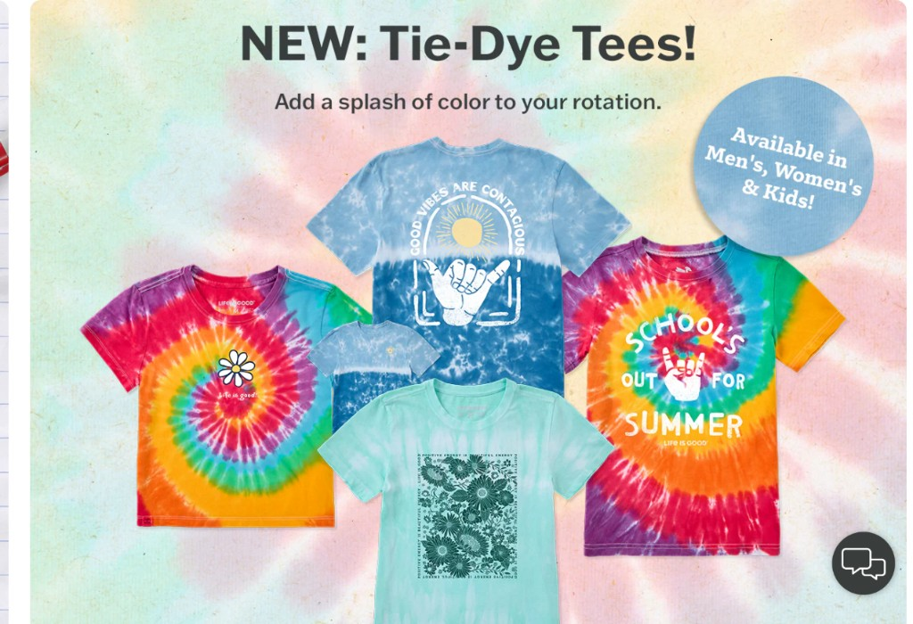

Life is Good Style Guide: Build a Feel-Good Wardrobe
2026-03-27 · Fashion & Beauty👁 0

Who this is for: Anyone who wants comfortable graphic tees, easy everyday layers, and accessories that look good without needing a fashion degree. This guide focuses on practical “what to buy first” advice, with real-world outfit building tips—not hype.
Why Life is Good feels different from generic tees
Most graphic T-shirts do one thing well: they look fine in a store photo. Life is Good tries to do more than that. The brand’s whole vibe is optimistic, playful, and built for daily wear, so you can reach for the same comfortable pieces all season long.
Comfort matters because you will actually wear what fits comfortably. A tee that feels good at 10 a.m. is the same tee you will still want at 7 p.m. after walking, errands, travel days, and family plans.
Start with a tee type that matches your day
Before you browse, decide how you plan to use your clothes. Life is Good has a range of tee styles that work for different routines.
- Crusher-LITE or “sun-safe” styles: Great when you want a soft, breathable feel and you might be out in warm weather.
- Classic crew neck tees: The easiest baseline for casual outfits. You can wear them under an open overshirt or layer them for travel.
- Heavier or textured tees: Helpful if you prefer structure or want less cling when the weather is humid.
Tip: If you are buying your first set, do not jump straight to “special” prints only. Start with one reliable everyday tee and one slightly different option (fit or fabric) so you learn what your body likes.
Fit 101: choose for comfort, then adjust for style
When people say “true to size,” they usually mean different things. For tees, the more useful idea is: choose the size that makes you feel good, then style around the rest.
Here is a quick decision approach:
- If you want an easy, relaxed fit, keep your usual size.
- If you want a cleaner silhouette, compare how you like your shirts to hang at the waist and sleeve length.
- If you like to layer (light jacket, flannel, cardigan), remember that layering needs room—especially if you do not want fabric pulling across the chest.
One practical trick: buy two sizes only if the brand offers an easy return process. If not, use your “favorite existing tee” as the measuring reference (shoulder seam, chest width, and length).
How to build outfits with Life is Good tees
The easiest way to shop is to plan outfits, not individual items. Here are outfit formulas you can repeat.
Outfit formula #1: The “everyday win”
Tee + jeans (or chinos) + comfortable sneakers. This combination is the default for errands, coffee runs, and casual meetups. The tee’s message becomes a personality point—without trying too hard.
Outfit formula #2: The “summer breeze” set
Tee + shorts + a hat. When heat hits, the hat and lighter bottoms do more than another layer. Choose colors that look good even in sunlight, because graphic tees can shift visually with different lighting.
Outfit formula #3: Travel-friendly layers
Tee + lightweight overshirt + crossbody or backpack. For travel, comfort is the main feature. You want fabric that breathes, but you also want something that works when you enter air-conditioned spaces.
Outfit formula #4: Casual but “put together”
Tee + casual button-up worn open (or a structured overshirt) + simple trousers. This is the easiest way to make a graphic tee feel more refined without switching to a full wardrobe change.
Hats and small accessories: the secret to repeatable style
Large upgrades are expensive. Small accessories are flexible. A hat can change the feel of a whole outfit instantly. It also solves practical problems: sun protection, hair control on travel days, and “I look casual but intentional” vibes.
When choosing accessories, pick one that matches your most frequent tee color palette. If most of your tees are bright, select a neutral hat. If you mostly wear neutral tees, you can go bolder with the hat or a sticker-style accent.
Gifting without guessing
If you are buying for someone else, you may not know their exact preferences. Still, you can shop with confidence by focusing on comfort and fit flexibility.
Gift strategy ideas:
- Choose a classic tee design that the recipient can wear multiple times.
- Pick an accessory first when sizing is uncertain.
- Consider a “safe repeat” item: one tee they can wear to casual events and errands.
Even better: if the official store provides easy ordering options and clear size guidance, gifting becomes far less risky.
Shop smart: why you should use the official Life is Good website
Third-party sellers can vary in stock quality, shipping speed, and even product consistency. If you want the “same look and feel” the brand is known for, start with the official site.
When you are ready to buy, open the store here: Shop Life is Good on the official website.
You can then match your picks to outfit formulas instead of scrolling endlessly. If you keep the purchase list simple—one tee baseline, one “different feel” tee, and one accessory—you avoid overbuying while still building a real wardrobe foundation.
Care tips that keep graphic tees looking fresh
Graphic wear should last longer than one summer. You do not need complicated routines—just repeatable habits.
- Wash in cool or gentle cycles when possible.
- Avoid high heat drying if the fabric or print seems delicate.
- Turn tees inside out before washing to help reduce wear on prints.
- Store folded rather than crammed so the graphic does not crack early.
If you do these steps consistently, your “feel-good favorites” will stay in rotation longer and the wardrobe cost per wear will drop naturally.
FAQ
Are Life is Good tees comfortable for daily wear? Yes—comfort is a core reason people choose the brand, especially for casual outfits and warm-weather routines.
Will I be able to wear the prints repeatedly without them looking worn out? With normal care (cool wash, avoid extreme heat), graphic tees can stay in good shape for a long time.
What should I buy first if I want a simple starter wardrobe? Start with one classic everyday tee plus one “different feel” option (fabric or fit), then add an accessory like a hat.
Key takeaways
- Shop by routine: warm-weather, travel, or office AC needs.
- Choose comfort first, then build outfits with tees + basics.
- Accessories multiply looks without multiplying spending.
- Buy on the official store for consistent product experience.
Comments
Disclosure: We may earn a commission when you shop through our links at no extra cost to you. We only recommend products and retailers we believe offer real value.
I followed the “start with one baseline tee” advice—now I finally have a shirt I actually wear every week.
The travel layer formula helped. The hat + tee combo is exactly what I needed for airport and hotel AC.